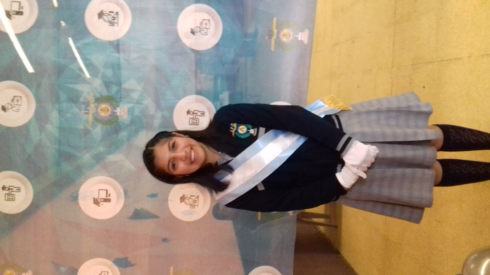
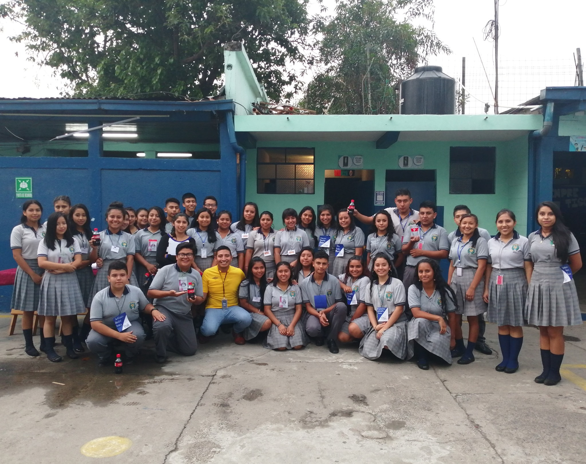

- Regresar Menu inicio
Primaria
 Regresar
Regresar
Estudie toda mi primaria en el "Colegio Evangelico la Verdad es Jesús" desde el año 2009 hasta el año 2015.
Regresar
Basicos
Estudie todos mis basicos en el "Instituto Profesional de Computacion" desde el año 2016 hasta el años 2018 .
 Regresar
Carrera
Estoy estudiando mi carrera de tres años en el "Instituto Profesional de Computacion" desde el año 2019 hasta el momento.
 Regresar